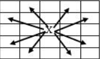

Trong luật cờ vua, mỗi nước đi của quân mã được quy định như sau: quân mã đang ở vị trí X như hình bên dưới có thể đi đến một trong các ô mà mũi tên chỉ đến (theo đường chéo của hình chữ nhật 2x3).
Yêu cầu: Cho trước bàn cờ kích thước n x m ô. Hãy đếm số nước đi ít nhất để quân mã di chuyển từ ô có tọa độ (x1, y1) đến ơ có tọa độ (x2, y2). Trong trường hợp không đến được thì xuất ra giá trị -1.
Dữ liệu vào:
Các số ghi trên cùng một dòng cách nhau ít nhất một kí tự trắng.
Kết quả: Ghi ra một số nguyên duy nhất cho biết số nước đi ít nhất để quân mã di chuyển từ ô (x1, y1) đến ô (x2, y2). Nếu không đến được thì ghi số -1.